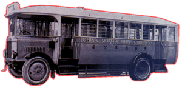

Leyland
- Lion
Model PLSCI
 |
引擎 Engine 容積 Engine Capacity 波箱 Gearbox 車身 Body Build 體積 Volume 載客量 Passenger 登記年份 Year |
: 不詳 : 5.1 L : Four-speed Sliding-mesh Type : Vickers Ltd. : 不詳 : 36 : 1926 - 19?? |
中巴在 1926 年向英國 Leyland [利蘭] 車廠訂購的 PLSC 型單層巴士，配用 Vickers 車身，是一款非常有英國本土色彩的巴士。